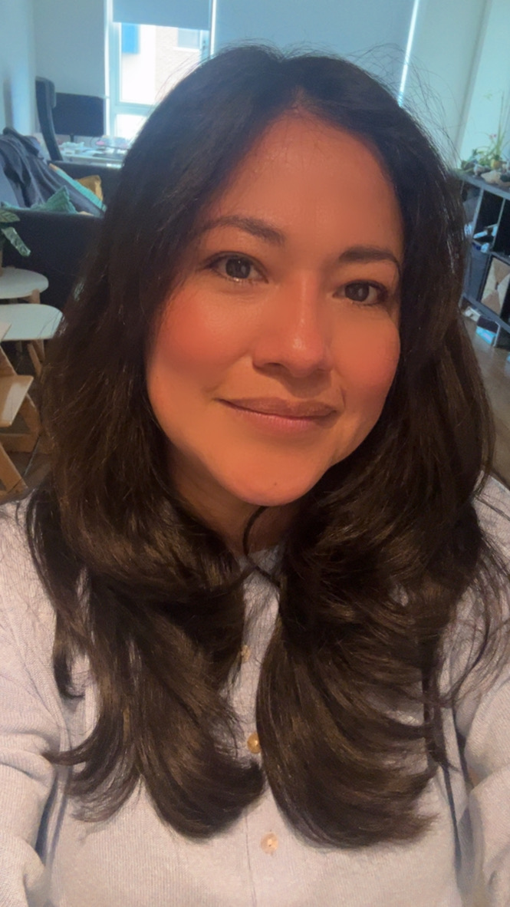
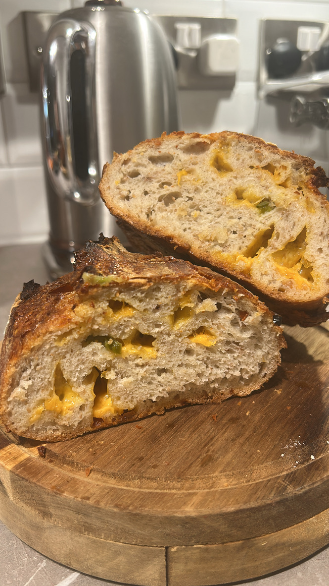
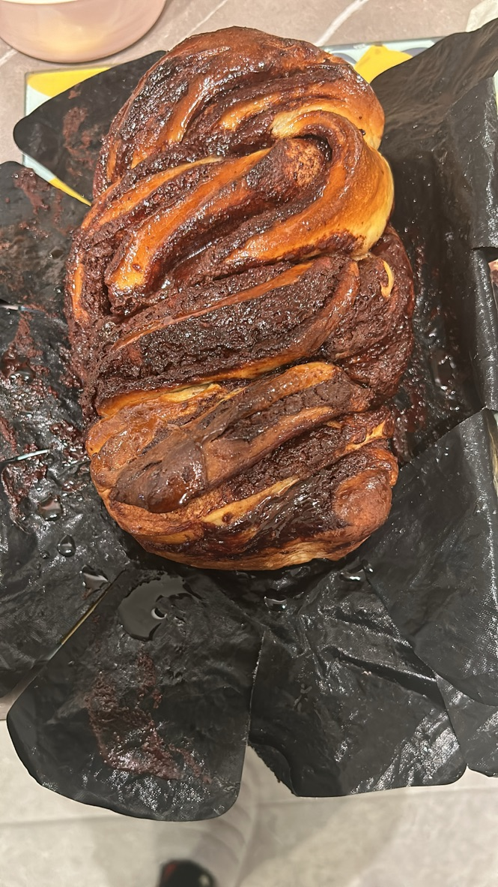
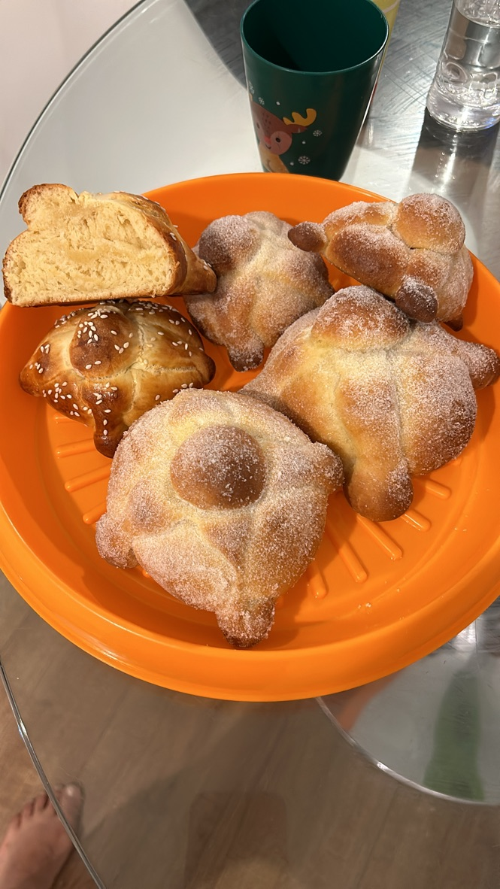
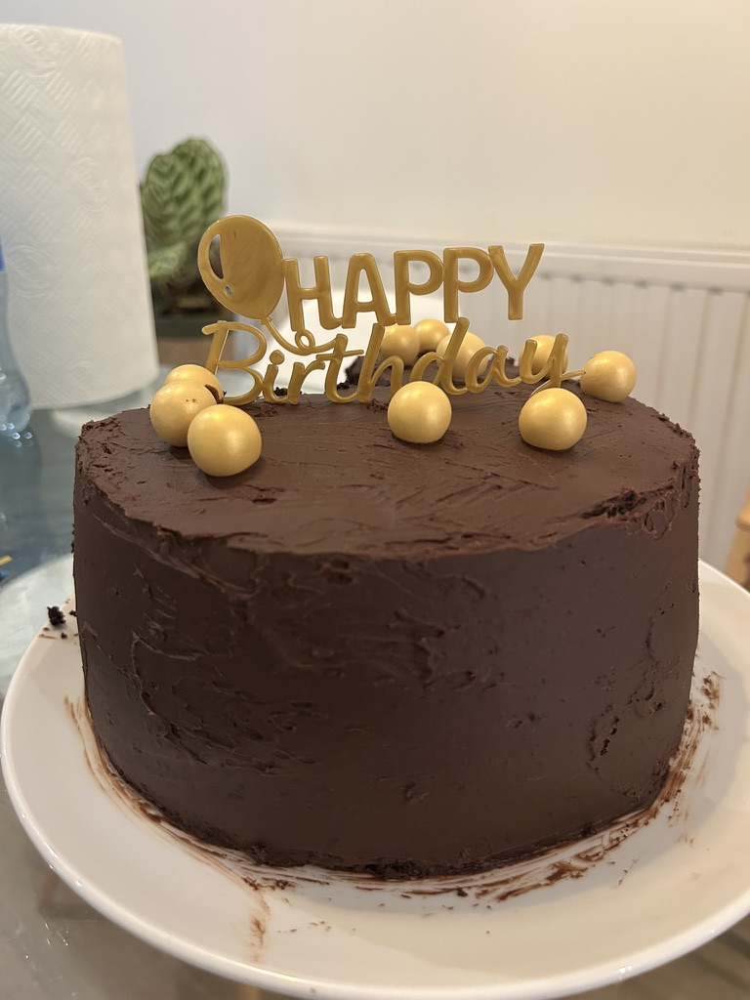
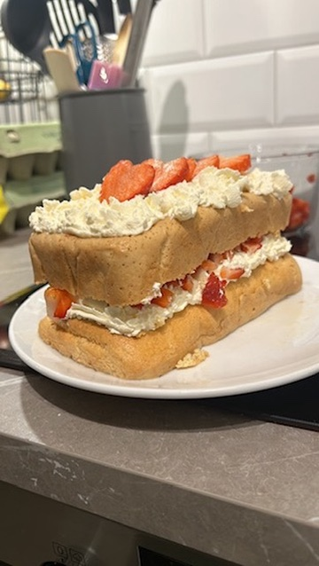
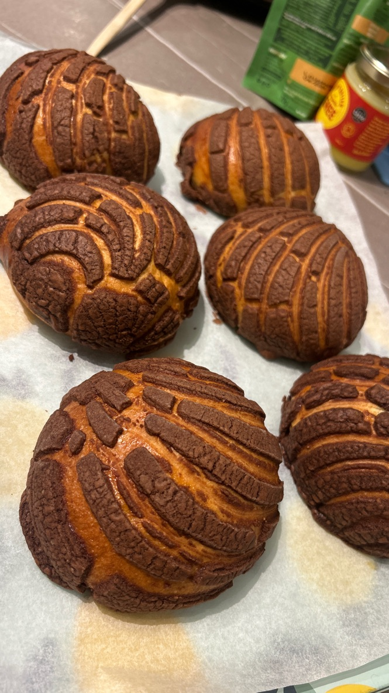
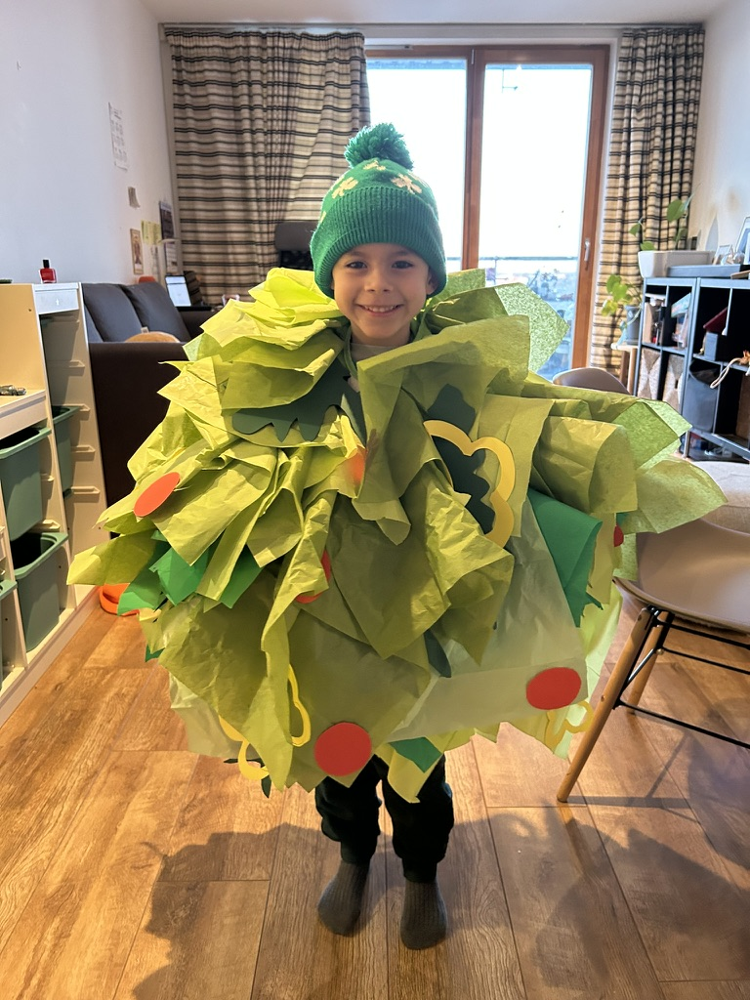

Hi, I'm Adriana
UX DESIGNER · DIGITAL MARKETING · TRUST & SAFETY
A Mexican creative from Oaxaca, Mexico — raised 15 minutes from the world capital of mezcal — who traded mezcal sunsets for Irish rain about 10 years ago, and honestly? Best decision I ever made.
I work at the intersection of UX design, digital marketing, and Trust & Safety, bringing a bilingual perspective and a genuine passion for meaningful digital experiences. Native Spanish speaker, C2 English proficient, and endlessly curious about how people interact with technology. Right now I'm fully focused on studying and levelling up my skills.
I believe great design isn't just about aesthetics — it's about empathy, precision, and truly understanding the human on the other side of the screen.
My path hasn't been a straight line — and I think that's what makes it interesting. I studied Marketing in Oaxaca, Mexico, and in 2006 I moved to Toronto, Canada for a cultural immersion — my first big leap, driven by a desire to learn English and experience the world beyond Mexico. That year abroad changed everything. Back home, I joined Europcar from 2008 to 2009, then moved into sales as Sales Assistant to the General Manager at a JCB machinery and parts company from 2009 to 2010, before working in brand management with Heineken and eventually packing my bags and landing in Ireland. What started as an adventure turned into a decade of building a life, a career, and a completely new skill set.
From hospitality roles in Los Angeles and Dublin between 2013 and 2017, I made the decision to step back from work to care for my family and my son. It was one of the most important and fulfilling chapters of my life. Eventually I returned to the workforce and in 2020 I joined Covalen Solutions as a Trust & Safety Analyst — while simultaneously studying Multimedia & UX Design at Stillorgan College. I never stopped learning: from 2021 to 2023 I completed a Higher Diploma in Human Interactive Design at Dublin City University, again alongside my full-time role. In 2023 I transitioned into AI Data Annotation and Content Evaluation, a role I held until 2026.
After being made redundant from Covalen Solutions in 2026, I made the decision to fully dedicate myself to studying — deepening my knowledge in digital marketing, SEO, and web development through the Illinois Institute of Technology via Coursera, and also completing a SOLAS course on how to start my own business. It's a deliberate pause to invest in myself and come back stronger. Being fluent in two languages and having lived across multiple cultures isn't just a line on my CV — it shapes how I think, how I communicate, and how I design.

I make, I shoot, I listen — these are my three creative outlets outside of work. Each one feeds the way I think and design.
From sourdough and conchas to handmade piñatas and party crafts — I put the same care into everything I make by hand.







Nikon D7100 — always looking for the right light, the right moment. One lens is a Lomography.


The soundtrack to late-night studying, weekend baking, and everything in between.
Let's work together
Have a project in mind or just want to say hello? I'd love to hear from you.
GET IN TOUCH